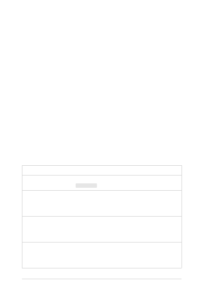

You can use the Assistant setup dropdown to select a few pre-loaded System message
examples to get started.
System messages give the model instructions about how it should behave and any
context it should reference when generating a response. You can describe the assistant's
personality, tell it what it should and shouldn't answer, and tell it how to format
responses.
Add few-shot examples allows you to provide conversational examples that are used by
the model for in-context learning.
At any time while using the Chat playground you can select View code to see Python,
curl, and json code samples pre-populated based on your current chat session and
settings selections. You can then take this code and write an application to complete the
same task you're currently performing with the playground.
Selecting the Send button sends the entered text to the completions API and the results
are returned back to the text box.
Select the Clear chat button to delete the current conversation history.
Name
Description
Deployments
Your deployment name that is associated with a specific model. For ChatGPT, you
need to use the gpt-35-turbo model.
Temperature
Controls randomness. Lowering the temperature means that the model produces
more repetitive and deterministic responses. Increasing the temperature results in
more unexpected or creative responses. Try adjusting temperature or Top P but
not both.
Max length
(tokens)
Set a limit on the number of tokens per model response. The API supports a
maximum of 4096 tokens shared between the prompt (including system message,
examples, message history, and user query) and the model's response. One token
is roughly four characters for typical English text.
Top
probabilities
Similar to temperature, this controls randomness but uses a different method.
Lowering Top P narrows the model’s token selection to likelier tokens. Increasing
Top P lets the model choose from tokens with both high and low likelihood. Try
adjusting temperature or Top P but not both.
Chat session
Settings